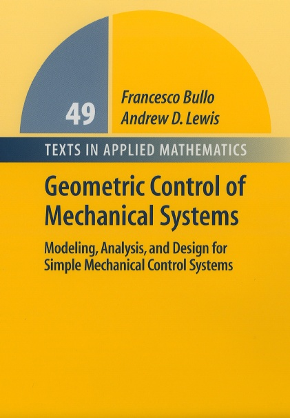

Professor Francesco Bullo - Geometric Control of Mechanical Systems
Geometric Control of Mechanical Systems
|
 |
Geometric Control of Mechanical Systems Volume 49 of Texts in Applied Mathematics
@Book{FB-ADL:04,
author = {Francesco Bullo and Andrew D. Lewis},
title = {Geometric Control of Mechanical Systems},
publisher = {Springer},
year = 2004,
isbn = {0-387-22195-6} }
|
Synopsis
From the back cover: The primary emphasis of this book is the modeling, analysis, and control of mechanical systems. The methods and results presented can be applied to a large class of mechanical control systems, including applications in robotics, autonomous vehicle control, and multi-body systems. The book is unique in that it presents a unified, rather than an inclusive, treatment of control theory for mechanical systems. A distinctive feature of the presentation is its reliance on techniques from differential and Riemannian geometry.
The book contains extensive examples and exercises, and will be suitable for a growing number of courses in this area. It begins with the detailed mathematical background, proceeding through innovative approaches to physical modeling, analysis, and design techniques. Numerous examples illustrate the proposed methods and results, while the many exercises test basic knowledge and introduce topics not covered in the main body of the text.
The audience of this book consists of two groups. The first group is comprised of graduate students in engineering or mathematical sciences who wish to learn the basics of geometric mechanics, nonlinear control theory, and control theory for mechanical systems. Readers will be able to immediately begin exploring the research literature on these subjects. The second group consists of researchers in mechanics and control theory. Nonlinear control theoreticians will find explicit links between concepts in geometric mechanics and nonlinear control theory. Researchers in mechanics will find an overview of topics in control theory that have relevance to mechanics.
Reviews
AMS Mathematical Reviews, MR2099139 (2005h:70030).
IEEE Transactions on Automatic Control, 5(12), page 2111, 2005.
International Journal of Robust and Nonlinear Control, 16, 547-548, 2006.
Journal of Geometry and Symmetry in Physics, 4, 99-103, 2005.
Free downloads
The following are excerpts from the book:
the cover page,
the preface,
the table of contents,
a Guide to examples and exercises, containing a list of mechanical systems that appear in the text as examples and/or exercises, and
We will keep, and periodically update, a list of errata and addenda.
Also available for download are
Information for instructors
A few words are said in the preface about using the book as a text, and we shall expand on these here with the following material:
possible course outlines for courses taught from the book;
slides for a course taught at the advanced undergraduate level at Queen's University;
slides from a workshop on the material in the book held at the 43rd IEEE Conference on Decision and Control.
Contact
Let us know if you have comments on the book, or if you have found an error. To make an error report, please send us email. It is easiest for us if error reports include page and line numbers, e.g., ‘‘Page 246, d7’’ if the error is on the 7th line from the top on page 246, or ‘‘Page 410, u10’’ if the error is on the 10th line from the bottom on page 410. Thanks.
Email: Francesco Bullo bullo-at-engineering.ucsb.edu
Email: Andrew D. Lewis andrew-at-mast.queensu.ca